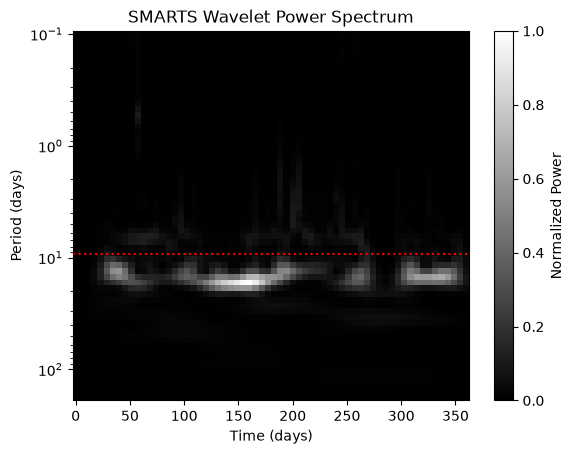
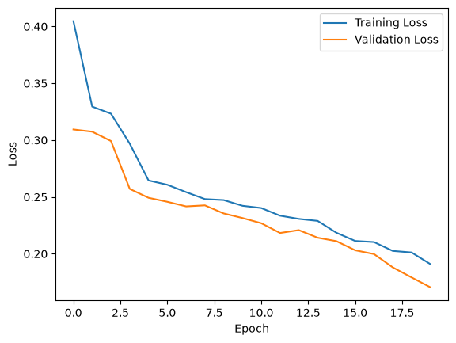
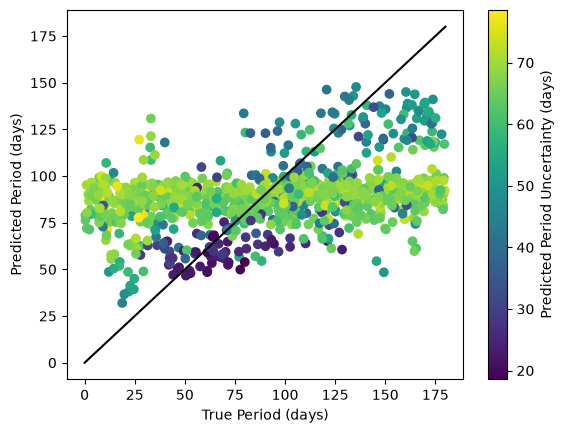
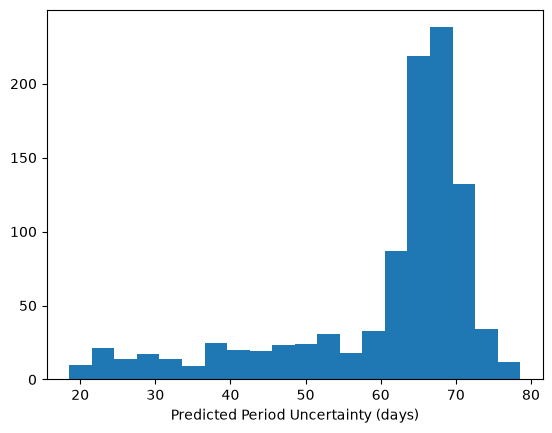
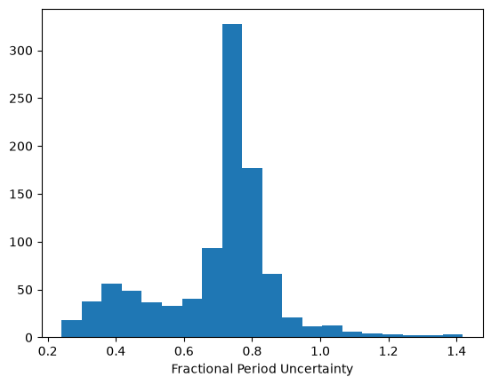
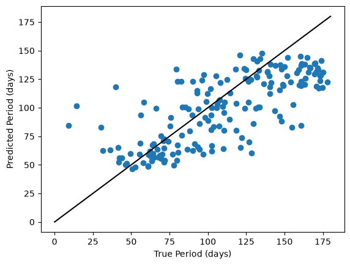

Estimating TESS rotation periods with CNNs#
Introduction#
The NASA TESS mission conducts an all-sky survey searching for exoplanets that transit their host stars. To do so, it collects time series photometry called “light curves” for millions of stars across the sky. These light curves have many science uses besides exoplanets, including stellar rotation. As a star rotates, cool magnetic spots come into and out of view, causing periodic wiggles in the brighness measurements through time. We can therefore use light curves from TESS to infer stellar rotation periods, which are useful for studying stellar magnetism, structure, and ages.
However, systematics associated with the telescope’s special Earth-Moon orbit make it difficult to measure long (> 13 day) rotation periods from TESS light curves using conventional frequency analysis techniques. Machine learning methods, and in particular Convolutional Neural Networks (CNN) have been shown to circumvent some of the effects of systematics and estimate rotation periods from TESS light curves and their frequency transforms.
In this tutorial we will use a CNN to estimate stellar rotation periods from frequency transforms of TESS light curves. For our training set, we will use the simulations from the MAST High Level Science Product SMARTS. SMARTS combines physically realistic simulations of rotational light curves with real noise and systematics from TESS. This combination allows CNNs to learn the difference between rotation signals and systematics and estimate stellar rotation periods.
Goals#
The goal of this notebook is to use SMARTS data to train a CNN to regress TESS rotation periods. We will
Train the CNN, and
The training examples are 2-dimensional arrays of wavelet transforms of TESS light curves. The wavelet transform concentrates the periodicity of the light curve, making it easier for a CNN to regress the period. CNNs take advantage of the image-like nature of a wavelet transform in the same way that CNNs are useful for image recognition and computer vision.
Runtime#
On the TIKE “Large” instance, this notebook takes just under 3 minutes to run from start to finish. The bulk of this time is spent downloading the training data. Once you’ve done that once, you can comment out the cell, and the notebook will be faster.
This notebook, including the CNN training, is configured to run on a single CPU.
Installs and Imports#
This notebook uses the following packages:
globfor generating lists of training filescopyfor saving training weightsnumpyfor array operationsmatplotlibfor plottingastropyfor reading FITS filestorchfor tensor and CNN operations
You can install the requirements by running %pip install -r requirements.txt.
from glob import glob # for generating lists of input files
from copy import deepcopy # for saving CNN weights
import numpy as np # array operations
from astropy.io import fits # FITS file operations
import matplotlib.pyplot as plt # for plotting
# For tensor and CNN operations
import torch
import torch.nn as nn
import torch.nn.functional as F
import torch.optim as optim
from torch.utils.data import Dataset, DataLoader
0. Configure training run#
Before we get started, we need to set some configuration parameters to know how much data to read in, and how many epochs to train for. Ideally, we want to run on the full training set (max_n = 1_000_000) for long enough that the loss plateaus (usually num_epochs = 500). But this for this simple demo, we will use a subset of training data and a shorter training time. We will train/validation/test using a 80%/10%/10% split, and we’ll build a CNN with 3 convolution layers with filter depths increasing from 8, to 16, to 32 filters.
max_n = 10_000 # max 1_000_000
num_epochs = 20 # 100 is pretty good, typically ~300 to 500 to reach a plateau
split = [8, 1, 1] # ratios for train/validation/test split
filters = [8, 16, 32] # list of CNN layer filter depths
1. Prepare training data#
The SMARTS training data are in the form of continuous Morlet wavelet transforms (CWTs) or wavelet power spectra (WPS). Rather than train on the light curve itself, the WPS provides a 2D representation of the frequency information present in the light curve. With frequency or period on the y-axis and time on the x-axis, the WPS illustrates which frequencies dominate the light curve at different times. Since it is effectively an image, we can take advantage of image recognition capabilities of CNNs.
For more information on CWTs, see
We will first download and extract the data, load it into a DataLoader, and then look at an example.
# Download and extract training data
# Comment this cell out if you've already downloaded and extracted the data once!
!curl -o hlsp_smarts_tess_ffi_all_tess_v1.0_cat.tar.gz https://archive.stsci.edu/hlsps/smarts/tess/hlsp_smarts_tess_ffi_all_tess_v1.0_cat.tar.gz
!tar -xvzf hlsp_smarts_tess_ffi_all_tess_v1.0_cat.tar.gz
% Total % Received % Xferd Average Speed Time Time Time Current
Dload Upload Total Spent Left Speed
0 0 0 0 0 0 0 0 --:--:-- --:--:-- --:--:-- 0
0 1873M 0 6304k 0 0 6799k 0 0:04:42 --:--:-- 0:04:42 6800k
1 1873M 1 20.7M 0 0 10.7M 0 0:02:54 0:00:01 0:02:53 10.7M
2 1873M 2 39.5M 0 0 13.5M 0 0:02:18 0:00:02 0:02:16 13.5M
3 1873M 3 60.0M 0 0 15.2M 0 0:02:02 0:00:03 0:01:59 15.2M
4 1873M 4 80.9M 0 0 16.4M 0 0:01:54 0:00:04 0:01:50 16.4M
5 1873M 5 101M 0 0 17.1M 0 0:01:49 0:00:05 0:01:44 19.1M
6 1873M 6 124M 0 0 18.0M 0 0:01:43 0:00:06 0:01:37 20.8M
7 1873M 7 149M 0 0 18.9M 0 0:01:39 0:00:07 0:01:32 22.0M
9 1873M 9 175M 0 0 19.6M 0 0:01:35 0:00:08 0:01:27 23.0M
10 1873M 10 201M 0 0 20.3M 0 0:01:32 0:00:09 0:01:23 24.1M
12 1873M 12 228M 0 0 20.9M 0 0:01:29 0:00:10 0:01:19 25.3M
13 1873M 13 257M 0 0 21.5M 0 0:01:26 0:00:11 0:01:15 26.5M
15 1873M 15 289M 0 0 22.3M 0 0:01:23 0:00:12 0:01:11 27.8M
17 1873M 17 322M 0 0 23.1M 0 0:01:20 0:00:13 0:01:07 29.5M
19 1873M 19 357M 0 0 23.9M 0 0:01:18 0:00:14 0:01:04 31.2M
21 1873M 21 395M 0 0 24.8M 0 0:01:15 0:00:15 0:01:00 33.2M
23 1873M 23 434M 0 0 25.6M 0 0:01:12 0:00:16 0:00:56 35.5M
25 1873M 25 476M 0 0 26.5M 0 0:01:10 0:00:17 0:00:53 37.4M
26 1873M 26 504M 0 0 26.6M 0 0:01:10 0:00:18 0:00:52 36.3M
28 1873M 28 531M 0 0 26.6M 0 0:01:10 0:00:19 0:00:51 34.6M
29 1873M 29 560M 0 0 26.7M 0 0:01:09 0:00:20 0:00:49 33.0M
31 1873M 31 587M 0 0 26.7M 0 0:01:09 0:00:21 0:00:48 30.5M
32 1873M 32 614M 0 0 26.7M 0 0:01:09 0:00:22 0:00:47 27.5M
34 1873M 34 642M 0 0 26.8M 0 0:01:09 0:00:23 0:00:46 27.5M
35 1873M 35 663M 0 0 26.6M 0 0:01:10 0:00:24 0:00:46 26.4M
36 1873M 36 683M 0 0 26.3M 0 0:01:11 0:00:25 0:00:46 24.6M
37 1873M 37 703M 0 0 26.1M 0 0:01:11 0:00:26 0:00:45 23.1M
38 1873M 38 725M 0 0 25.9M 0 0:01:12 0:00:27 0:00:45 22.3M
39 1873M 39 748M 0 0 25.8M 0 0:01:12 0:00:28 0:00:44 21.1M
41 1873M 41 772M 0 0 25.8M 0 0:01:12 0:00:29 0:00:43 21.8M
42 1873M 42 793M 0 0 25.6M 0 0:01:13 0:00:30 0:00:43 22.0M
44 1873M 44 829M 0 0 25.9M 0 0:01:12 0:00:31 0:00:41 25.1M
45 1873M 45 854M 0 0 25.9M 0 0:01:12 0:00:32 0:00:40 25.6M
46 1873M 46 876M 0 0 25.8M 0 0:01:12 0:00:33 0:00:39 25.6M
48 1873M 48 906M 0 0 25.9M 0 0:01:12 0:00:34 0:00:38 26.8M
50 1873M 50 950M 0 0 26.4M 0 0:01:10 0:00:35 0:00:35 31.3M
53 1873M 53 998M 0 0 27.0M 0 0:01:09 0:00:36 0:00:33 33.8M
55 1873M 55 1047M 0 0 27.6M 0 0:01:07 0:00:37 0:00:30 38.6M
58 1873M 58 1099M 0 0 28.2M 0 0:01:06 0:00:38 0:00:28 44.5M
61 1873M 61 1151M 0 0 28.8M 0 0:01:04 0:00:39 0:00:25 48.9M
64 1873M 64 1203M 0 0 29.4M 0 0:01:03 0:00:40 0:00:23 50.5M
67 1873M 67 1257M 0 0 29.9M 0 0:01:02 0:00:41 0:00:21 51.7M
69 1873M 69 1309M 0 0 30.4M 0 0:01:01 0:00:42 0:00:19 52.3M
72 1873M 72 1366M 0 0 31.0M 0 0:01:00 0:00:43 0:00:17 53.3M
75 1873M 75 1423M 0 0 31.6M 0 0:00:59 0:00:44 0:00:15 54.5M
79 1873M 79 1480M 0 0 32.2M 0 0:00:58 0:00:45 0:00:13 55.4M
82 1873M 82 1541M 0 0 32.8M 0 0:00:57 0:00:46 0:00:11 56.9M
85 1873M 85 1598M 0 0 33.3M 0 0:00:56 0:00:47 0:00:09 57.8M
87 1873M 87 1638M 0 0 33.4M 0 0:00:55 0:00:48 0:00:07 54.5M
90 1873M 90 1688M 0 0 33.8M 0 0:00:55 0:00:49 0:00:06 52.8M
93 1873M 93 1757M 0 0 34.5M 0 0:00:54 0:00:50 0:00:04 55.2M
97 1873M 97 1833M 0 0 35.3M 0 0:00:53 0:00:51 0:00:02 58.3M
100 1873M 100 1873M 0 0 35.7M 0 0:00:52 0:00:52 --:--:-- 61.3M
hlsp_smarts_tess_ffi_all_tess_v1.0_sim.fits
We will partition the data into three sets: a training, validation, and test set.
The training set is used to fit the CNN parameters
The validation set is held-out for use to determine when to stop training. The training loss will decrease indefinitely, but the validation loss will stop decreasing when the CNN begins to overfit, signalling that it’s reached a local maximum in its ability to generalize to new data.
The test set is used for the final performance evaluation.
We use Pytorch Dataset (subclassed here) and DataLoader (used below) to load the wavelet data. Pytorch Dataset and DataLoader can be accessed in batches, which makes training more efficient.
# Define Dataset and Dataloader classes
class WaveletDataset(Dataset):
"""
WaveletDataset to read in the training data.
Attributes
----------
periods: array of rotation period corresponding to each wavelet transform.
wavelets: array containing the stack of wavelet transforms.
"""
def __init__(self, periods, wavelets, mode, random_seed=42, max_n=10000, split=(8, 1, 1), normalize=True):
"""
Parameters
----------
`periods` (numpy.ndarray): the array of rotation periods, or labels.
`wavelets` (numpy.ndarray): the array of wavelet power spectra, or features.
`mode` (str): must be one of "train", "validation", or "test". Loads different data
depending on the specified mode.
`random_seed` (int, optional): seed for random number generator for
reproducibility.
`max_n` (int, optional): the number of training examples to use.
`split` (list-like): the split fractions for train/validation/test partitions
`normalize` (bool): whether to divide the periods and wavelets by their maximum values.
"""
# create shuffled index and shuffle arrays
np.random.seed(random_seed)
idx = np.random.choice(np.arange(len(periods), dtype=int), size=max_n, replace=False)
p = periods[idx]
w = wavelets[idx]
if normalize:
pmax = periods.max().item()
wmax = wavelets.max().item()
p = (p/pmax).astype(np.float32)
w = (w/wmax).astype(np.float32)
else:
pmax = np.nan
wmax = np.nan
p = p.astype(np.float32)
w = w.astype(np.uint8)
self.pmax = pmax
self.wmax = wmax
# determine how many examples to use for each partition
n_train, n_val, _ = (max_n * np.array(split)/np.sum(split)).astype(int).cumsum()
if mode == "train":
p = p[:n_train]
w = w[:n_train]
elif mode == "validation":
p = p[n_train:n_val]
w = w[n_train:n_val]
elif mode == "test":
p = p[n_val:]
w = w[n_val:]
else:
raise ValueError("`mode` must be one of 'train', 'validation', or 'test'.")
# Assign periods and wavelets to class attributes
self.wavelets = w
self.periods = p
def __len__(self):
"""Returns the number of training examples in the Dataset.
"""
return len(self.periods)
def __getitem__(self, idx):
"""
The data accessor.
Parameters
----------
`idx` (list-like): the list of indices to be accessed
Returns
-------
`X` (tensor): substack of wavelet transforms
`label` (tensor): sub-array of rotation periods
"""
if torch.is_tensor(idx):
idx = idx.tolist()
X = torch.tensor(self.wavelets[idx], dtype=torch.float32).unsqueeze(0)
label = torch.tensor(self.periods[idx, np.newaxis])
return X, label
# Read SMARTS data into data loaders
filename = "hlsp_smarts_tess_ffi_all_tess_v1.0_sim.fits"
print(f"Reading data from {filename}...", end="")
with fits.open(filename, memmap=True) as f:
p = f[1].data["Period"]
w = f[2].data
train_dataset = WaveletDataset(p, w, mode="train", max_n=max_n, split=split)
valid_dataset = WaveletDataset(p, w, mode="validation", max_n=max_n, split=split)
test_dataset = WaveletDataset(p, w, mode="test", max_n=max_n, split=split)
print("Done.")
print("Storing training data into DataLoaders...", end="")
train_loader = torch.utils.data.DataLoader(train_dataset, batch_size=50)
valid_loader = torch.utils.data.DataLoader(valid_dataset, batch_size=50)
print("Done.")
Reading data from hlsp_smarts_tess_ffi_all_tess_v1.0_sim.fits...
Done.
Storing training data into DataLoaders...Done.
# Plot an example WPS
wl, p = train_dataset[8]
wldata = wl.squeeze().numpy()
plt.figure()
plt.pcolormesh(
np.linspace(0, 360, len(wldata)), # time baseline is about a year
np.geomspace(0.1, 180, len(wldata)), # period axis goes from 0.1 to 180
wldata,
shading="nearest",
cmap="binary_r"
)
plt.yscale("log")
plt.xlabel("Time (days)")
plt.ylabel("Period (days)")
plt.gca().invert_yaxis()
plt.title("SMARTS Wavelet Power Spectrum")
plt.colorbar(label="Normalized Power")
# Plot the actual rotation period of the simulated star
plt.axhline(180*p.numpy().item(), color="r", linestyle=":");

This is an example of a WPS. For sinusoidal signals, there is a horizontal band of power at the dominant frequency. This example star has an equatorial rotation period of about 9 days, but the dominant frequency from the power spectrum is about 10.5 days. This is due to surface differential rotation, where spots emerge at higher latitudes that rotate more slowly than the equator.
This panel (without the axes or colorbar) is what the CNN will be trained on.
2. Build the CNN#
We will build a CNN that takes 2D input (the WPS) and predicts two values: the stellar rotation period and its corresponding uncertainty. The CNN has the following aspects:
Three 2D convolution layers for feature extraction
ReLU activation
1D max pooling in the time axis, for dimensionality reduction without losing frequency resolution.
Dropout to build redundancy and avoid overfitting
Softplus output for regression
The CNN also has a configurable number of feature extractors (also called “kernels” or “filters”), which is set by the c parameter. It defaults to [8, 16, 32], so that each successive convolution layer increases in depth by a factor of 2. You might also try [16, 32, 64] or [32, 64, 128] to see whether more feature extractors improve the performance.
class ConvNet(nn.Module):
"""
A relatively simple 2D Convolutional Neural Network with a configurable
number of trainable convolution kernels.
Parameters
----------
c (list of ints, [8, 16, 32]): List of convolutional kernel depths.
k (int or list of ints, 3): Convolutional kernel widths. If an int is
passed, it will be multiplied into a list of length `len(c)`.
"""
def __init__(self, c=[8, 16, 32], k=3):
if isinstance(k, int):
k = [k]*len(c)
n_nodes = (64 - (sum(k) - len(k))) * c[-1]
super(ConvNet, self).__init__()
self.conv1 = nn.Conv2d( 1, c[0], k[0], 1) # 62 x 20
self.conv2 = nn.Conv2d(c[0], c[1], k[1], 1) # 60 x 6
self.conv3 = nn.Conv2d(c[1], c[2], k[2], 1) # 58 x 1
self.fc1 = nn.Linear(n_nodes, 256) # 58 x 32 = 1856
self.fc2 = nn.Linear(256, 64)
self.fc3 = nn.Linear(64, 2)
self.dropout1 = nn.Dropout(0.1)
self.dropout2 = nn.Dropout2d(0.1)
def forward(self, x):
x = self.conv1(x)
x = F.relu(x)
x = F.max_pool2d(x, (1, 3))
x = self.dropout2(x)
x = self.conv2(x)
x = F.relu(x)
x = F.max_pool2d(x, (1, 3))
x = self.dropout2(x)
x = self.conv3(x)
x = F.relu(x)
x = F.max_pool2d(x, (1, x.shape[-1]))
x = self.dropout2(x)
x = torch.flatten(x, 1)
x = F.relu(self.fc1(x))
x = self.dropout1(x)
x = F.relu(self.fc2(x))
x = self.dropout1(x)
output = F.softplus(self.fc3(x))
return output
Here we will also define our loss function. A typical loss function for regression is the mean squared error (MSE). However, MSE doesn’t allow for the prediction of uncertainties. Alternative loss functions that allow the prediction of uncertainties include the Laplacian and Gaussian Negative Log-Likelihoods (NLL). Gaussian NLL is analogous to MSE, while Laplacian NLL is analogous to median absolute error, which is less biased by outliers and more accurately predicts values near the edges of the training distribution. For these reasons, we will use the Laplacian NLL, which has the form
\(L = \frac{1}{2b} \exp(\frac{-|x - \mu|}{b})\),
where \(\mu\) is the mean, and \(b\) is related to the variance \(\sigma^2\) by \(\sigma^2 = 2 b^2\).
The negative log-likelihood is then
\(-\log L = \frac{|x - \mu|}{b} + \ln(2b)\).
You may find that other loss functions work better for your use case. We recommend trying several.
def laplacian_nll(y_pred, y_true, k=1):
"""
Compute Negative Log Likelihood for Laplacian Output Layer. This loss function
lets the CNN predict a value with a related uncertainty.
Args:
y_pred: Nx2k matrix of parameters. Each row parametrizes
k Laplacian distributions, each with (mean, std).
y_true: Nxk matrix of (data) target values.
"""
means = y_pred[:, :k]
sigmas = y_pred[:, k:]
# convert from sigma to b
b = sigmas / np.sqrt(2)
# compute NLL
nll = torch.abs(means - y_true)/b + torch.log(2*b)
return nll
def gaussian_nll(y_pred, y_true, k=1):
"""
Compute Negative Log Likelihood for Gaussian Output Layer. This loss function
lets the CNN predict a value with a related uncertainty.
Args:
y_pred: Nx2k matrix of parameters. Each row parametrizes
k Laplacian distributions, each with (mean, std).
y_true: Nxk matrix of (data) target values.
"""
means = y_pred[:, :k]
sigmas = y_pred[:, k:]
# compute NLL
nll = ((means - y_true)/sigmas)**2 + torch.log(2*np.pi*sigmas)
return nll/2
# Set the chosen loss function here
loss_function = laplacian_nll
3. Define training, validation, and evaluation functions#
We train the CNN using the Adam optimizer, which uses adaptive learning rates (LR) to train the network. To vary the LR, we use a plateau scheduler (ReduceLROnPlateau), which reduces the LR when the loss plateaus. This enables the CNN parameters to find local minima more easily, rather than take large steps over them.
Finally, we will also use an early stopping criterion. This means that if the validation loss plateaus or increases for a certain number of epochs, training stops early, and the best fit CNN values are saved.
def train(model, train_loader, valid_loader, num_epochs=100, early_stopping_patience=10, device=torch.device("cpu")):
"""Train the neural network for all desired epochs.
"""
optimizer = optim.Adam(model.parameters(), lr=5e-5)
# Set learning rate scheduler
scheduler = optim.lr_scheduler.ReduceLROnPlateau(optimizer, factor=0.7, patience=3)
# Set up training loop
train_p_loss = []
val_p_loss = []
min_loss = 100
early_stopping_count = 0
best_epoch = 0
for epoch in range(1, num_epochs + 1):
# Compute a single epoch of training
p_loss = train_epoch(model, train_loader, optimizer, epoch, device=device)
train_p_loss.append(p_loss)
p_loss = evaluate(model, valid_loader)
val_p_loss.append(p_loss)
total_loss = p_loss
scheduler.step(total_loss) # step learning rate scheduler
# if new fit is better than the previous best fit, update best fit weights
if total_loss < min_loss:
min_loss = total_loss
early_stopping_count = 0
best_epoch = epoch
best_weights = deepcopy(model.state_dict())
# otherwise, if loss is not getting better, count down to stopping criterion
else:
early_stopping_count += 1
print(f"Early Stopping Count: {early_stopping_count}")
if early_stopping_count == early_stopping_patience:
print(f"Early Stopping. Best Epoch: {best_epoch} with loss {min_loss:.4f}.")
with open("best_epoch.txt", "w") as f:
print(best_epoch, file=f)
break
# save and return the best fit weights
torch.save(best_weights, f"model.pt")
return best_weights, train_p_loss, val_p_loss
def train_epoch(model, train_loader, optimizer, epoch, device=torch.device("cpu")):
"""Train the network for a single epoch.
"""
model.train() # Set the model to training mode
period_losses = []
# iterate over data batches
for batch_idx, (data, target) in enumerate(train_loader):
data, target = data.to(device, dtype=torch.float), target.to(device, dtype=torch.float)
optimizer.zero_grad() # Clear the gradient
output = model(data) # Make predictions
loss = loss_function(output, target).mean()
loss.backward() # Gradient computation
optimizer.step() # Perform a single optimization step
period_losses.append(loss.item())
# print progress every few batches
if (batch_idx*len(data)) % 500 == 0:
print("Epoch: {:3d} [{:5d}/{:5d} ({:3.0f}%)] Training Loss: {:9.6f}".format(
epoch, batch_idx * len(data), len(train_loader.dataset),
100. * batch_idx / len(train_loader), period_losses[-1]))
# return the mean loss value
return np.mean(period_losses)
def evaluate(model, test_loader, verbose=True, device=torch.device("cpu"), return_predictions=False):
"""
Evaluate network on validation or test data and compute loss.
This is like "train" except the weights are not updated.
"""
model.eval() # Set the model to inference mode
test_p_loss = 0
targets = []
preds = []
with torch.no_grad(): # For the inference step, gradient is not computed
for data, target in test_loader:
data, target = data.to(device, dtype=torch.float), target.to(device, dtype=torch.float)
output = model(data)
targets.extend(target.cpu().numpy())
preds.extend(output.cpu().numpy())
test_p_loss += loss_function(output, target).sum()
test_p_loss /= len(test_loader.dataset)
if verbose:
print(f"Test loss: {test_p_loss:.4f}")
if return_predictions:
return test_p_loss, np.squeeze(preds), np.squeeze(targets)
return test_p_loss
4. Train the CNN on SMARTS data#
# Initialize CNN
model = ConvNet(c=filters)
# Train CNN
weights, train_p_loss, val_p_loss = train(model, train_loader, valid_loader,
early_stopping_patience=10, num_epochs=num_epochs)
Epoch: 1 [ 0/ 8000 ( 0%)] Training Loss: 0.569471
Epoch: 1 [ 500/ 8000 ( 6%)] Training Loss: 0.615291
Epoch: 1 [ 1000/ 8000 ( 12%)] Training Loss: 0.479290
Epoch: 1 [ 1500/ 8000 ( 19%)] Training Loss: 0.465898
Epoch: 1 [ 2000/ 8000 ( 25%)] Training Loss: 0.507753
Epoch: 1 [ 2500/ 8000 ( 31%)] Training Loss: 0.371834
Epoch: 1 [ 3000/ 8000 ( 38%)] Training Loss: 0.415722
Epoch: 1 [ 3500/ 8000 ( 44%)] Training Loss: 0.369728
Epoch: 1 [ 4000/ 8000 ( 50%)] Training Loss: 0.227544
Epoch: 1 [ 4500/ 8000 ( 56%)] Training Loss: 0.376536
Epoch: 1 [ 5000/ 8000 ( 62%)] Training Loss: 0.346157
Epoch: 1 [ 5500/ 8000 ( 69%)] Training Loss: 0.357779
Epoch: 1 [ 6000/ 8000 ( 75%)] Training Loss: 0.239342
Epoch: 1 [ 6500/ 8000 ( 81%)] Training Loss: 0.368981
Epoch: 1 [ 7000/ 8000 ( 88%)] Training Loss: 0.292112
Epoch: 1 [ 7500/ 8000 ( 94%)] Training Loss: 0.484192
Test loss: 0.3094
Epoch: 2 [ 0/ 8000 ( 0%)] Training Loss: 0.350505
Epoch: 2 [ 500/ 8000 ( 6%)] Training Loss: 0.478401
Epoch: 2 [ 1000/ 8000 ( 12%)] Training Loss: 0.235628
Epoch: 2 [ 1500/ 8000 ( 19%)] Training Loss: 0.275297
Epoch: 2 [ 2000/ 8000 ( 25%)] Training Loss: 0.417001
Epoch: 2 [ 2500/ 8000 ( 31%)] Training Loss: 0.246222
Epoch: 2 [ 3000/ 8000 ( 38%)] Training Loss: 0.312371
Epoch: 2 [ 3500/ 8000 ( 44%)] Training Loss: 0.329703
Epoch: 2 [ 4000/ 8000 ( 50%)] Training Loss: 0.239126
Epoch: 2 [ 4500/ 8000 ( 56%)] Training Loss: 0.308004
Epoch: 2 [ 5000/ 8000 ( 62%)] Training Loss: 0.326866
Epoch: 2 [ 5500/ 8000 ( 69%)] Training Loss: 0.341518
Epoch: 2 [ 6000/ 8000 ( 75%)] Training Loss: 0.214627
Epoch: 2 [ 6500/ 8000 ( 81%)] Training Loss: 0.342402
Epoch: 2 [ 7000/ 8000 ( 88%)] Training Loss: 0.319529
Epoch: 2 [ 7500/ 8000 ( 94%)] Training Loss: 0.454926
Test loss: 0.3074
Epoch: 3 [ 0/ 8000 ( 0%)] Training Loss: 0.336553
Epoch: 3 [ 500/ 8000 ( 6%)] Training Loss: 0.466353
Epoch: 3 [ 1000/ 8000 ( 12%)] Training Loss: 0.248021
Epoch: 3 [ 1500/ 8000 ( 19%)] Training Loss: 0.306374
Epoch: 3 [ 2000/ 8000 ( 25%)] Training Loss: 0.417597
Epoch: 3 [ 2500/ 8000 ( 31%)] Training Loss: 0.163400
Epoch: 3 [ 3000/ 8000 ( 38%)] Training Loss: 0.369540
Epoch: 3 [ 3500/ 8000 ( 44%)] Training Loss: 0.331022
Epoch: 3 [ 4000/ 8000 ( 50%)] Training Loss: 0.197743
Epoch: 3 [ 4500/ 8000 ( 56%)] Training Loss: 0.303495
Epoch: 3 [ 5000/ 8000 ( 62%)] Training Loss: 0.339481
Epoch: 3 [ 5500/ 8000 ( 69%)] Training Loss: 0.390829
Epoch: 3 [ 6000/ 8000 ( 75%)] Training Loss: 0.253030
Epoch: 3 [ 6500/ 8000 ( 81%)] Training Loss: 0.364892
Epoch: 3 [ 7000/ 8000 ( 88%)] Training Loss: 0.298817
Epoch: 3 [ 7500/ 8000 ( 94%)] Training Loss: 0.447417
Test loss: 0.2992
Epoch: 4 [ 0/ 8000 ( 0%)] Training Loss: 0.344511
Epoch: 4 [ 500/ 8000 ( 6%)] Training Loss: 0.470843
Epoch: 4 [ 1000/ 8000 ( 12%)] Training Loss: 0.276893
Epoch: 4 [ 1500/ 8000 ( 19%)] Training Loss: 0.242852
Epoch: 4 [ 2000/ 8000 ( 25%)] Training Loss: 0.327562
Epoch: 4 [ 2500/ 8000 ( 31%)] Training Loss: 0.210223
Epoch: 4 [ 3000/ 8000 ( 38%)] Training Loss: 0.327362
Epoch: 4 [ 3500/ 8000 ( 44%)] Training Loss: 0.321210
Epoch: 4 [ 4000/ 8000 ( 50%)] Training Loss: 0.148829
Epoch: 4 [ 4500/ 8000 ( 56%)] Training Loss: 0.324703
Epoch: 4 [ 5000/ 8000 ( 62%)] Training Loss: 0.297024
Epoch: 4 [ 5500/ 8000 ( 69%)] Training Loss: 0.324376
Epoch: 4 [ 6000/ 8000 ( 75%)] Training Loss: 0.192809
Epoch: 4 [ 6500/ 8000 ( 81%)] Training Loss: 0.315033
Epoch: 4 [ 7000/ 8000 ( 88%)] Training Loss: 0.286193
Epoch: 4 [ 7500/ 8000 ( 94%)] Training Loss: 0.399133
Test loss: 0.2571
Epoch: 5 [ 0/ 8000 ( 0%)] Training Loss: 0.282569
Epoch: 5 [ 500/ 8000 ( 6%)] Training Loss: 0.443100
Epoch: 5 [ 1000/ 8000 ( 12%)] Training Loss: 0.243041
Epoch: 5 [ 1500/ 8000 ( 19%)] Training Loss: 0.179308
Epoch: 5 [ 2000/ 8000 ( 25%)] Training Loss: 0.323359
Epoch: 5 [ 2500/ 8000 ( 31%)] Training Loss: 0.185485
Epoch: 5 [ 3000/ 8000 ( 38%)] Training Loss: 0.319931
Epoch: 5 [ 3500/ 8000 ( 44%)] Training Loss: 0.252983
Epoch: 5 [ 4000/ 8000 ( 50%)] Training Loss: 0.150700
Epoch: 5 [ 4500/ 8000 ( 56%)] Training Loss: 0.343755
Epoch: 5 [ 5000/ 8000 ( 62%)] Training Loss: 0.288368
Epoch: 5 [ 5500/ 8000 ( 69%)] Training Loss: 0.316289
Epoch: 5 [ 6000/ 8000 ( 75%)] Training Loss: 0.103736
Epoch: 5 [ 6500/ 8000 ( 81%)] Training Loss: 0.305928
Epoch: 5 [ 7000/ 8000 ( 88%)] Training Loss: 0.272759
Epoch: 5 [ 7500/ 8000 ( 94%)] Training Loss: 0.398313
Test loss: 0.2493
Epoch: 6 [ 0/ 8000 ( 0%)] Training Loss: 0.259486
Epoch: 6 [ 500/ 8000 ( 6%)] Training Loss: 0.440024
Epoch: 6 [ 1000/ 8000 ( 12%)] Training Loss: 0.249251
Epoch: 6 [ 1500/ 8000 ( 19%)] Training Loss: 0.172381
Epoch: 6 [ 2000/ 8000 ( 25%)] Training Loss: 0.295886
Epoch: 6 [ 2500/ 8000 ( 31%)] Training Loss: 0.166406
Epoch: 6 [ 3000/ 8000 ( 38%)] Training Loss: 0.362233
Epoch: 6 [ 3500/ 8000 ( 44%)] Training Loss: 0.244554
Epoch: 6 [ 4000/ 8000 ( 50%)] Training Loss: 0.090609
Epoch: 6 [ 4500/ 8000 ( 56%)] Training Loss: 0.310130
Epoch: 6 [ 5000/ 8000 ( 62%)] Training Loss: 0.337447
Epoch: 6 [ 5500/ 8000 ( 69%)] Training Loss: 0.326508
Epoch: 6 [ 6000/ 8000 ( 75%)] Training Loss: 0.133006
Epoch: 6 [ 6500/ 8000 ( 81%)] Training Loss: 0.334170
Epoch: 6 [ 7000/ 8000 ( 88%)] Training Loss: 0.259563
Epoch: 6 [ 7500/ 8000 ( 94%)] Training Loss: 0.380407
Test loss: 0.2458
Epoch: 7 [ 0/ 8000 ( 0%)] Training Loss: 0.271926
Epoch: 7 [ 500/ 8000 ( 6%)] Training Loss: 0.421802
Epoch: 7 [ 1000/ 8000 ( 12%)] Training Loss: 0.213378
Epoch: 7 [ 1500/ 8000 ( 19%)] Training Loss: 0.144015
Epoch: 7 [ 2000/ 8000 ( 25%)] Training Loss: 0.328319
Epoch: 7 [ 2500/ 8000 ( 31%)] Training Loss: 0.151785
Epoch: 7 [ 3000/ 8000 ( 38%)] Training Loss: 0.368819
Epoch: 7 [ 3500/ 8000 ( 44%)] Training Loss: 0.268732
Epoch: 7 [ 4000/ 8000 ( 50%)] Training Loss: 0.152473
Epoch: 7 [ 4500/ 8000 ( 56%)] Training Loss: 0.286661
Epoch: 7 [ 5000/ 8000 ( 62%)] Training Loss: 0.278481
Epoch: 7 [ 5500/ 8000 ( 69%)] Training Loss: 0.302660
Epoch: 7 [ 6000/ 8000 ( 75%)] Training Loss: 0.121284
Epoch: 7 [ 6500/ 8000 ( 81%)] Training Loss: 0.317373
Epoch: 7 [ 7000/ 8000 ( 88%)] Training Loss: 0.272906
Epoch: 7 [ 7500/ 8000 ( 94%)] Training Loss: 0.389804
Test loss: 0.2417
Epoch: 8 [ 0/ 8000 ( 0%)] Training Loss: 0.304508
Epoch: 8 [ 500/ 8000 ( 6%)] Training Loss: 0.402457
Epoch: 8 [ 1000/ 8000 ( 12%)] Training Loss: 0.200569
Epoch: 8 [ 1500/ 8000 ( 19%)] Training Loss: 0.123512
Epoch: 8 [ 2000/ 8000 ( 25%)] Training Loss: 0.287825
Epoch: 8 [ 2500/ 8000 ( 31%)] Training Loss: 0.143356
Epoch: 8 [ 3000/ 8000 ( 38%)] Training Loss: 0.298720
Epoch: 8 [ 3500/ 8000 ( 44%)] Training Loss: 0.229682
Epoch: 8 [ 4000/ 8000 ( 50%)] Training Loss: 0.097645
Epoch: 8 [ 4500/ 8000 ( 56%)] Training Loss: 0.265260
Epoch: 8 [ 5000/ 8000 ( 62%)] Training Loss: 0.288922
Epoch: 8 [ 5500/ 8000 ( 69%)] Training Loss: 0.322982
Epoch: 8 [ 6000/ 8000 ( 75%)] Training Loss: 0.103502
Epoch: 8 [ 6500/ 8000 ( 81%)] Training Loss: 0.341582
Epoch: 8 [ 7000/ 8000 ( 88%)] Training Loss: 0.260513
Epoch: 8 [ 7500/ 8000 ( 94%)] Training Loss: 0.397280
Test loss: 0.2426
Early Stopping Count: 1
Epoch: 9 [ 0/ 8000 ( 0%)] Training Loss: 0.237539
Epoch: 9 [ 500/ 8000 ( 6%)] Training Loss: 0.395674
Epoch: 9 [ 1000/ 8000 ( 12%)] Training Loss: 0.185763
Epoch: 9 [ 1500/ 8000 ( 19%)] Training Loss: 0.183939
Epoch: 9 [ 2000/ 8000 ( 25%)] Training Loss: 0.293362
Epoch: 9 [ 2500/ 8000 ( 31%)] Training Loss: 0.154563
Epoch: 9 [ 3000/ 8000 ( 38%)] Training Loss: 0.325258
Epoch: 9 [ 3500/ 8000 ( 44%)] Training Loss: 0.198789
Epoch: 9 [ 4000/ 8000 ( 50%)] Training Loss: 0.153365
Epoch: 9 [ 4500/ 8000 ( 56%)] Training Loss: 0.295889
Epoch: 9 [ 5000/ 8000 ( 62%)] Training Loss: 0.269417
Epoch: 9 [ 5500/ 8000 ( 69%)] Training Loss: 0.291558
Epoch: 9 [ 6000/ 8000 ( 75%)] Training Loss: 0.181758
Epoch: 9 [ 6500/ 8000 ( 81%)] Training Loss: 0.294986
Epoch: 9 [ 7000/ 8000 ( 88%)] Training Loss: 0.280533
Epoch: 9 [ 7500/ 8000 ( 94%)] Training Loss: 0.425677
Test loss: 0.2355
Epoch: 10 [ 0/ 8000 ( 0%)] Training Loss: 0.279321
Epoch: 10 [ 500/ 8000 ( 6%)] Training Loss: 0.376448
Epoch: 10 [ 1000/ 8000 ( 12%)] Training Loss: 0.212101
Epoch: 10 [ 1500/ 8000 ( 19%)] Training Loss: 0.174385
Epoch: 10 [ 2000/ 8000 ( 25%)] Training Loss: 0.308038
Epoch: 10 [ 2500/ 8000 ( 31%)] Training Loss: 0.161970
Epoch: 10 [ 3000/ 8000 ( 38%)] Training Loss: 0.285128
Epoch: 10 [ 3500/ 8000 ( 44%)] Training Loss: 0.200649
Epoch: 10 [ 4000/ 8000 ( 50%)] Training Loss: 0.078730
Epoch: 10 [ 4500/ 8000 ( 56%)] Training Loss: 0.274257
Epoch: 10 [ 5000/ 8000 ( 62%)] Training Loss: 0.257867
Epoch: 10 [ 5500/ 8000 ( 69%)] Training Loss: 0.280664
Epoch: 10 [ 6000/ 8000 ( 75%)] Training Loss: 0.054862
Epoch: 10 [ 6500/ 8000 ( 81%)] Training Loss: 0.314652
Epoch: 10 [ 7000/ 8000 ( 88%)] Training Loss: 0.249870
Epoch: 10 [ 7500/ 8000 ( 94%)] Training Loss: 0.386771
Test loss: 0.2315
Epoch: 11 [ 0/ 8000 ( 0%)] Training Loss: 0.262633
Epoch: 11 [ 500/ 8000 ( 6%)] Training Loss: 0.370099
Epoch: 11 [ 1000/ 8000 ( 12%)] Training Loss: 0.214976
Epoch: 11 [ 1500/ 8000 ( 19%)] Training Loss: 0.177000
Epoch: 11 [ 2000/ 8000 ( 25%)] Training Loss: 0.296455
Epoch: 11 [ 2500/ 8000 ( 31%)] Training Loss: 0.110082
Epoch: 11 [ 3000/ 8000 ( 38%)] Training Loss: 0.316348
Epoch: 11 [ 3500/ 8000 ( 44%)] Training Loss: 0.274722
Epoch: 11 [ 4000/ 8000 ( 50%)] Training Loss: 0.061884
Epoch: 11 [ 4500/ 8000 ( 56%)] Training Loss: 0.310216
Epoch: 11 [ 5000/ 8000 ( 62%)] Training Loss: 0.318750
Epoch: 11 [ 5500/ 8000 ( 69%)] Training Loss: 0.321291
Epoch: 11 [ 6000/ 8000 ( 75%)] Training Loss: 0.074960
Epoch: 11 [ 6500/ 8000 ( 81%)] Training Loss: 0.230101
Epoch: 11 [ 7000/ 8000 ( 88%)] Training Loss: 0.225274
Epoch: 11 [ 7500/ 8000 ( 94%)] Training Loss: 0.304971
Test loss: 0.2269
Epoch: 12 [ 0/ 8000 ( 0%)] Training Loss: 0.267177
Epoch: 12 [ 500/ 8000 ( 6%)] Training Loss: 0.376971
Epoch: 12 [ 1000/ 8000 ( 12%)] Training Loss: 0.216524
Epoch: 12 [ 1500/ 8000 ( 19%)] Training Loss: 0.173691
Epoch: 12 [ 2000/ 8000 ( 25%)] Training Loss: 0.293985
Epoch: 12 [ 2500/ 8000 ( 31%)] Training Loss: 0.136610
Epoch: 12 [ 3000/ 8000 ( 38%)] Training Loss: 0.320318
Epoch: 12 [ 3500/ 8000 ( 44%)] Training Loss: 0.236719
Epoch: 12 [ 4000/ 8000 ( 50%)] Training Loss: 0.104558
Epoch: 12 [ 4500/ 8000 ( 56%)] Training Loss: 0.303304
Epoch: 12 [ 5000/ 8000 ( 62%)] Training Loss: 0.316798
Epoch: 12 [ 5500/ 8000 ( 69%)] Training Loss: 0.284551
Epoch: 12 [ 6000/ 8000 ( 75%)] Training Loss: 0.123296
Epoch: 12 [ 6500/ 8000 ( 81%)] Training Loss: 0.268929
Epoch: 12 [ 7000/ 8000 ( 88%)] Training Loss: 0.192122
Epoch: 12 [ 7500/ 8000 ( 94%)] Training Loss: 0.333218
Test loss: 0.2184
Epoch: 13 [ 0/ 8000 ( 0%)] Training Loss: 0.291996
Epoch: 13 [ 500/ 8000 ( 6%)] Training Loss: 0.388526
Epoch: 13 [ 1000/ 8000 ( 12%)] Training Loss: 0.182105
Epoch: 13 [ 1500/ 8000 ( 19%)] Training Loss: 0.082850
Epoch: 13 [ 2000/ 8000 ( 25%)] Training Loss: 0.312726
Epoch: 13 [ 2500/ 8000 ( 31%)] Training Loss: 0.108193
Epoch: 13 [ 3000/ 8000 ( 38%)] Training Loss: 0.306666
Epoch: 13 [ 3500/ 8000 ( 44%)] Training Loss: 0.210422
Epoch: 13 [ 4000/ 8000 ( 50%)] Training Loss: 0.106501
Epoch: 13 [ 4500/ 8000 ( 56%)] Training Loss: 0.282780
Epoch: 13 [ 5000/ 8000 ( 62%)] Training Loss: 0.304362
Epoch: 13 [ 5500/ 8000 ( 69%)] Training Loss: 0.285242
Epoch: 13 [ 6000/ 8000 ( 75%)] Training Loss: 0.112082
Epoch: 13 [ 6500/ 8000 ( 81%)] Training Loss: 0.293136
Epoch: 13 [ 7000/ 8000 ( 88%)] Training Loss: 0.244217
Epoch: 13 [ 7500/ 8000 ( 94%)] Training Loss: 0.355598
Test loss: 0.2209
Early Stopping Count: 1
Epoch: 14 [ 0/ 8000 ( 0%)] Training Loss: 0.269710
Epoch: 14 [ 500/ 8000 ( 6%)] Training Loss: 0.372227
Epoch: 14 [ 1000/ 8000 ( 12%)] Training Loss: 0.163504
Epoch: 14 [ 1500/ 8000 ( 19%)] Training Loss: 0.133906
Epoch: 14 [ 2000/ 8000 ( 25%)] Training Loss: 0.296601
Epoch: 14 [ 2500/ 8000 ( 31%)] Training Loss: 0.098271
Epoch: 14 [ 3000/ 8000 ( 38%)] Training Loss: 0.311353
Epoch: 14 [ 3500/ 8000 ( 44%)] Training Loss: 0.184120
Epoch: 14 [ 4000/ 8000 ( 50%)] Training Loss: 0.096633
Epoch: 14 [ 4500/ 8000 ( 56%)] Training Loss: 0.300132
Epoch: 14 [ 5000/ 8000 ( 62%)] Training Loss: 0.267464
Epoch: 14 [ 5500/ 8000 ( 69%)] Training Loss: 0.259469
Epoch: 14 [ 6000/ 8000 ( 75%)] Training Loss: 0.030625
Epoch: 14 [ 6500/ 8000 ( 81%)] Training Loss: 0.285316
Epoch: 14 [ 7000/ 8000 ( 88%)] Training Loss: 0.248358
Epoch: 14 [ 7500/ 8000 ( 94%)] Training Loss: 0.368895
Test loss: 0.2142
Epoch: 15 [ 0/ 8000 ( 0%)] Training Loss: 0.253889
Epoch: 15 [ 500/ 8000 ( 6%)] Training Loss: 0.368450
Epoch: 15 [ 1000/ 8000 ( 12%)] Training Loss: 0.193448
Epoch: 15 [ 1500/ 8000 ( 19%)] Training Loss: 0.167519
Epoch: 15 [ 2000/ 8000 ( 25%)] Training Loss: 0.271090
Epoch: 15 [ 2500/ 8000 ( 31%)] Training Loss: 0.135670
Epoch: 15 [ 3000/ 8000 ( 38%)] Training Loss: 0.264211
Epoch: 15 [ 3500/ 8000 ( 44%)] Training Loss: 0.207308
Epoch: 15 [ 4000/ 8000 ( 50%)] Training Loss: 0.052188
Epoch: 15 [ 4500/ 8000 ( 56%)] Training Loss: 0.293884
Epoch: 15 [ 5000/ 8000 ( 62%)] Training Loss: 0.259832
Epoch: 15 [ 5500/ 8000 ( 69%)] Training Loss: 0.304074
Epoch: 15 [ 6000/ 8000 ( 75%)] Training Loss: 0.062319
Epoch: 15 [ 6500/ 8000 ( 81%)] Training Loss: 0.273680
Epoch: 15 [ 7000/ 8000 ( 88%)] Training Loss: 0.284502
Epoch: 15 [ 7500/ 8000 ( 94%)] Training Loss: 0.370107
Test loss: 0.2111
Epoch: 16 [ 0/ 8000 ( 0%)] Training Loss: 0.227306
Epoch: 16 [ 500/ 8000 ( 6%)] Training Loss: 0.373519
Epoch: 16 [ 1000/ 8000 ( 12%)] Training Loss: 0.152155
Epoch: 16 [ 1500/ 8000 ( 19%)] Training Loss: 0.140952
Epoch: 16 [ 2000/ 8000 ( 25%)] Training Loss: 0.234211
Epoch: 16 [ 2500/ 8000 ( 31%)] Training Loss: 0.096074
Epoch: 16 [ 3000/ 8000 ( 38%)] Training Loss: 0.298839
Epoch: 16 [ 3500/ 8000 ( 44%)] Training Loss: 0.232395
Epoch: 16 [ 4000/ 8000 ( 50%)] Training Loss: 0.113300
Epoch: 16 [ 4500/ 8000 ( 56%)] Training Loss: 0.303574
Epoch: 16 [ 5000/ 8000 ( 62%)] Training Loss: 0.276230
Epoch: 16 [ 5500/ 8000 ( 69%)] Training Loss: 0.306601
Epoch: 16 [ 6000/ 8000 ( 75%)] Training Loss: 0.090908
Epoch: 16 [ 6500/ 8000 ( 81%)] Training Loss: 0.257406
Epoch: 16 [ 7000/ 8000 ( 88%)] Training Loss: 0.216339
Epoch: 16 [ 7500/ 8000 ( 94%)] Training Loss: 0.367038
Test loss: 0.2031
Epoch: 17 [ 0/ 8000 ( 0%)] Training Loss: 0.245669
Epoch: 17 [ 500/ 8000 ( 6%)] Training Loss: 0.340538
Epoch: 17 [ 1000/ 8000 ( 12%)] Training Loss: 0.198395
Epoch: 17 [ 1500/ 8000 ( 19%)] Training Loss: 0.158126
Epoch: 17 [ 2000/ 8000 ( 25%)] Training Loss: 0.287751
Epoch: 17 [ 2500/ 8000 ( 31%)] Training Loss: 0.130888
Epoch: 17 [ 3000/ 8000 ( 38%)] Training Loss: 0.266677
Epoch: 17 [ 3500/ 8000 ( 44%)] Training Loss: 0.162567
Epoch: 17 [ 4000/ 8000 ( 50%)] Training Loss: 0.159078
Epoch: 17 [ 4500/ 8000 ( 56%)] Training Loss: 0.291095
Epoch: 17 [ 5000/ 8000 ( 62%)] Training Loss: 0.295925
Epoch: 17 [ 5500/ 8000 ( 69%)] Training Loss: 0.296799
Epoch: 17 [ 6000/ 8000 ( 75%)] Training Loss: 0.112286
Epoch: 17 [ 6500/ 8000 ( 81%)] Training Loss: 0.296259
Epoch: 17 [ 7000/ 8000 ( 88%)] Training Loss: 0.263017
Epoch: 17 [ 7500/ 8000 ( 94%)] Training Loss: 0.271879
Test loss: 0.1998
Epoch: 18 [ 0/ 8000 ( 0%)] Training Loss: 0.246267
Epoch: 18 [ 500/ 8000 ( 6%)] Training Loss: 0.360526
Epoch: 18 [ 1000/ 8000 ( 12%)] Training Loss: 0.168678
Epoch: 18 [ 1500/ 8000 ( 19%)] Training Loss: 0.123250
Epoch: 18 [ 2000/ 8000 ( 25%)] Training Loss: 0.236983
Epoch: 18 [ 2500/ 8000 ( 31%)] Training Loss: 0.110819
Epoch: 18 [ 3000/ 8000 ( 38%)] Training Loss: 0.258113
Epoch: 18 [ 3500/ 8000 ( 44%)] Training Loss: 0.185770
Epoch: 18 [ 4000/ 8000 ( 50%)] Training Loss: 0.030616
Epoch: 18 [ 4500/ 8000 ( 56%)] Training Loss: 0.309444
Epoch: 18 [ 5000/ 8000 ( 62%)] Training Loss: 0.238356
Epoch: 18 [ 5500/ 8000 ( 69%)] Training Loss: 0.284723
Epoch: 18 [ 6000/ 8000 ( 75%)] Training Loss: 0.093561
Epoch: 18 [ 6500/ 8000 ( 81%)] Training Loss: 0.250788
Epoch: 18 [ 7000/ 8000 ( 88%)] Training Loss: 0.229485
Epoch: 18 [ 7500/ 8000 ( 94%)] Training Loss: 0.283664
Test loss: 0.1881
Epoch: 19 [ 0/ 8000 ( 0%)] Training Loss: 0.268061
Epoch: 19 [ 500/ 8000 ( 6%)] Training Loss: 0.389955
Epoch: 19 [ 1000/ 8000 ( 12%)] Training Loss: 0.125377
Epoch: 19 [ 1500/ 8000 ( 19%)] Training Loss: 0.115155
Epoch: 19 [ 2000/ 8000 ( 25%)] Training Loss: 0.204034
Epoch: 19 [ 2500/ 8000 ( 31%)] Training Loss: 0.135347
Epoch: 19 [ 3000/ 8000 ( 38%)] Training Loss: 0.247007
Epoch: 19 [ 3500/ 8000 ( 44%)] Training Loss: 0.157457
Epoch: 19 [ 4000/ 8000 ( 50%)] Training Loss: 0.047817
Epoch: 19 [ 4500/ 8000 ( 56%)] Training Loss: 0.295841
Epoch: 19 [ 5000/ 8000 ( 62%)] Training Loss: 0.319431
Epoch: 19 [ 5500/ 8000 ( 69%)] Training Loss: 0.310973
Epoch: 19 [ 6000/ 8000 ( 75%)] Training Loss: 0.107284
Epoch: 19 [ 6500/ 8000 ( 81%)] Training Loss: 0.257575
Epoch: 19 [ 7000/ 8000 ( 88%)] Training Loss: 0.275556
Epoch: 19 [ 7500/ 8000 ( 94%)] Training Loss: 0.278398
Test loss: 0.1792
Epoch: 20 [ 0/ 8000 ( 0%)] Training Loss: 0.247295
Epoch: 20 [ 500/ 8000 ( 6%)] Training Loss: 0.304136
Epoch: 20 [ 1000/ 8000 ( 12%)] Training Loss: 0.183117
Epoch: 20 [ 1500/ 8000 ( 19%)] Training Loss: 0.128909
Epoch: 20 [ 2000/ 8000 ( 25%)] Training Loss: 0.260723
Epoch: 20 [ 2500/ 8000 ( 31%)] Training Loss: 0.040952
Epoch: 20 [ 3000/ 8000 ( 38%)] Training Loss: 0.239627
Epoch: 20 [ 3500/ 8000 ( 44%)] Training Loss: 0.185328
Epoch: 20 [ 4000/ 8000 ( 50%)] Training Loss: 0.083180
Epoch: 20 [ 4500/ 8000 ( 56%)] Training Loss: 0.274076
Epoch: 20 [ 5000/ 8000 ( 62%)] Training Loss: 0.262544
Epoch: 20 [ 5500/ 8000 ( 69%)] Training Loss: 0.195595
Epoch: 20 [ 6000/ 8000 ( 75%)] Training Loss: 0.105130
Epoch: 20 [ 6500/ 8000 ( 81%)] Training Loss: 0.222100
Epoch: 20 [ 7000/ 8000 ( 88%)] Training Loss: 0.220846
Epoch: 20 [ 7500/ 8000 ( 94%)] Training Loss: 0.242182
Test loss: 0.1706
Now that the CNN is trained, we should take a look at the “learning curves,” or the loss over time.
plt.figure()
plt.plot(train_p_loss, label="Training Loss")
plt.plot(val_p_loss, label="Validation Loss")
plt.xlabel("Epoch")
plt.ylabel("Loss")
plt.legend();

For this exercise, we only trained on a small subset of the training data, and for a limited number of training epochs. This means that the CNN hasn’t yet reached a plateau, and it’s not fully trained. You will see better performance by training for more epochs (until the loss values plateau), which you can configure back in Section 0 by changing num_epochs. You can also train on a larger piece of the training data by configuring max_n in the same cell.
5. Test the CNN performance#
Now we use the trained CNN to predict stellar rotation periods from a held-out test set, and compare the predictions to the true values.
Since we’re only training over a small fraction of the training set in this tutorial, we don’t expect the predictions to match the true values. You will see better performance by training on a larger piece (or all) of the training set, or training for more epochs, by configuring max_n or num_epochs back in Section 0.
# evaluate CNN to infer rotation periods
test_loader = torch.utils.data.DataLoader(test_dataset, batch_size=50)
test_loss, preds, trues = evaluate(model, test_loader, verbose=True, return_predictions=True)
Test loss: 0.1355
# compare the CNN predictions to the true values
%matplotlib inline
true_periods = trues*test_dataset.pmax
pred_periods = preds[:, 0]*test_dataset.pmax
pred_sigma = preds[:, 1]*test_dataset.pmax
plt.scatter(true_periods, pred_periods, c=pred_sigma)
plt.plot([0, 180], [0, 180], "k")
plt.xlabel("True Period (days)")
plt.ylabel("Predicted Period (days)")
plt.colorbar(label="Predicted Period Uncertainty (days)");

Most of the data are predicted to have the median period of 90 days, which is the best guess when the CNN doesn’t know better. We also predicted the uncertainty in the period, so let’s see what that looks like.
sigmas = preds[:, 1]*test_dataset.pmax
frac = sigmas/pred_periods
plt.figure()
plt.hist(sigmas, bins=20)
plt.xlabel("Predicted Period Uncertainty (days)")
plt.figure()
plt.hist(frac, bins=20)
plt.xlabel("Fractional Period Uncertainty");


We can start to see a dip forming at sigma/period ~ 0.5 in the second plot (this dip will become more pronounced for longer training runs), so let’s use that to filter the results, weeding out “bad” predictions.
true_filtered = true_periods[frac < 0.5]
pred_filtered = pred_periods[frac < 0.5]
plt.scatter(true_filtered, pred_filtered)
plt.plot([0, 180], [0, 180], "k")
plt.xlabel("True Period (days)")
plt.ylabel("Predicted Period (days)");

With the “bad” predictions filtered out, the predictions look much better, even after only 20 epochs. Remember that the uncertainty is predicted from the quality of the data, so this kind of cut can be applied to predictions on real data as well.
While our loss function can serve as a metric of accuracy, we might also be interested in more classical accuracy metrics to measure the performance of the CNN. As an example, let’s take a look at the root-mean-squared (RMS) error.
def rms_error(true, pred):
return np.sqrt(np.mean((true - pred)**2))
print(f"Unfiltered prediction count: {len(pred_periods)}\n"
f"RMS error: {rms_error(true_periods, pred_periods):.2f} days\n\n"
f"Filtered prediction count: {len(pred_filtered)}\n"
f"RMS error: {rms_error(true_filtered, pred_filtered):.2f} days.")
Unfiltered prediction count: 1000
RMS error: 47.11 days
Filtered prediction count: 179
RMS error: 29.72 days.
When the predictions are filtered, we retain only a fraction of the test data, but the accuracy improves significantly. Note that
Filtering by predicted uncertainty improves the accuracy. This implies that the predicted uncertainty is a useful estimator of the true credibility of CNN predictions.
While only a fraction of the test set is left after filtering, remember that we trained for only 20 epochs, and on a subset of the training data. Doing a full run will improve both the accuracy of predictions and the number of “good” predictions.
Summary#
CNNs are useful machine learning models that can leverage spatially correlated information in images and image-like data. CNNs trained on simulated light curve wavelet transforms make reasonable predictions of the rotation periods of TESS stars despite the complicated orbit-related systematics present in the light curves.
In this tutorial, we
downloaded and preprocessed training data from MAST,
built a CNN using
pytorch,defined training, validation, and evaluation functions,
trained the CNN, and
analyzed the CNN performance on held-out test data.
We explored various machine learning and astrophysics concepts, including
stellar rotation with TESS light curves,
continuous wavelet transforms, and
specialized loss functions to predict values with uncertainty.
Next Steps#
Now that we’ve run the base case, try the following exercises:
train on a larger fraction of the training data by increasing
max_n,train for more epochs by increasing
num_epochs,use different train/validation/test ratios by modifying
split,use larger convolution filter depths by changing
filters,use Gaussian NLL loss to train the CNN.
See how any of these choices might affect the CNN performance.
References#
Recovery of TESS Stellar Rotation Periods Using Deep Learning (Claytor et al. 2022)
TESS Stellar Rotation up to 80 Days in the Southern Continuous Viewing Zone (Claytor et al. 2024)
A Practical Guide to Wavelet Analysis (Torrence & Compo 1998)
Stellar Magnetism, Activity, and Rotation with Time Series (SMARTS)